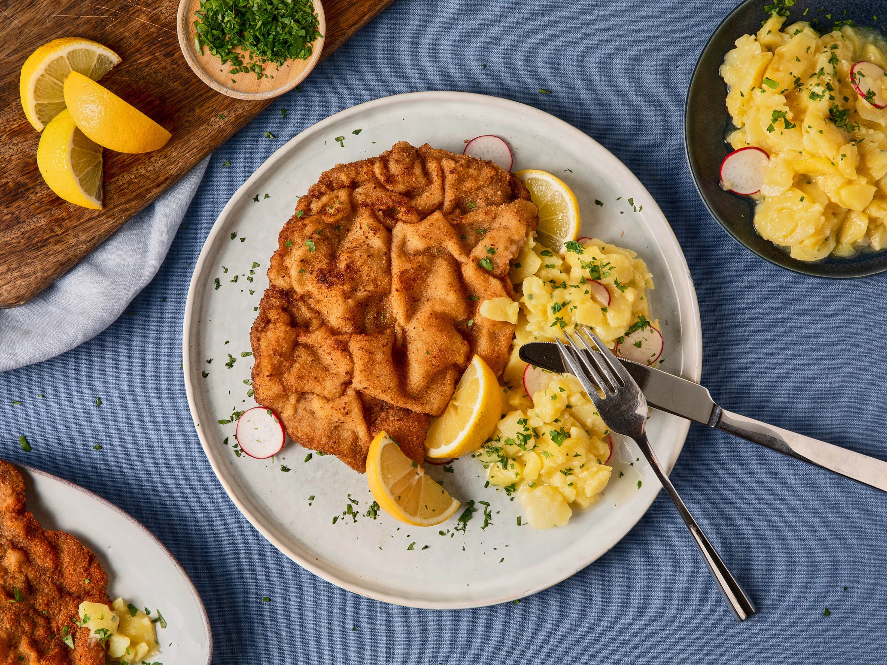

Schnitzel Terkenal di Jerman
Schnitzel adalah hidangan daging yang digoreng tepung hingga renyah, sangat populer di Jerman dan negara-negara Eropa lainnya. Disajikan dengan kentang, lemon, atau salad segar, schnitzel menawarkan rasa klasik yang memanjakan lidah. Berikut beberapa jenis schnitzel paling digemari:
- Wiener Schnitzel - Asli Austria namun sangat populer di Jerman, terbuat dari daging sapi muda yang digoreng tepung dengan tekstur renyah dan rasa lembut.
- Chicken Schnitzel - Versi ayam yang ringan dan juicy, cocok untuk semua usia.
- Turkey Schnitzel - Alternatif rendah lemak, tetap gurih dan nikmat dengan rasa khas kalkun.
- Beef Schnitzel - Lebih kaya rasa, cocok bagi pencinta daging merah dengan tekstur padat dan kenyal.
Fun Fact: Meskipun berasal dari Austria, Schnitzel telah menjadi makanan pokok di banyak rumah Jerman. Bahkan ada "Schnitzel Day" di beberapa restoran sebagai promosi mingguan!

Galeri schnitzel Jerman


Tips Penyajian: Schnitzel paling lezat disajikan hangat dengan kentang goreng, kentang rebus, atau salad segar. Tambahkan irisan lemon untuk sentuhan rasa asam yang menyegarkan. Jangan lupa cocolan saus tartar atau mustard untuk pengalaman maksimal!
Schnitzel adalah simbol kelezatan kuliner Eropa yang sederhana namun menggoda. Saat berkunjung ke Jerman, jangan lewatkan kesempatan mencicipi berbagai variasi schnitzel yang menggugah selera—baik di restoran tradisional maupun di festival makanan lokal!